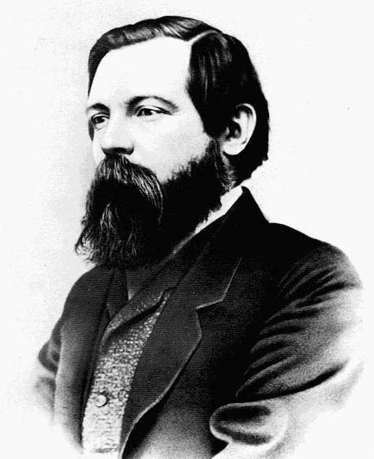
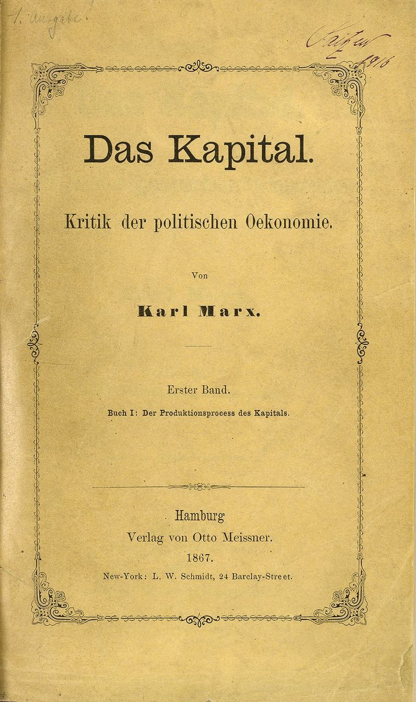
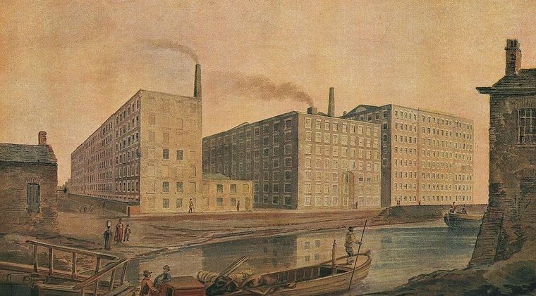
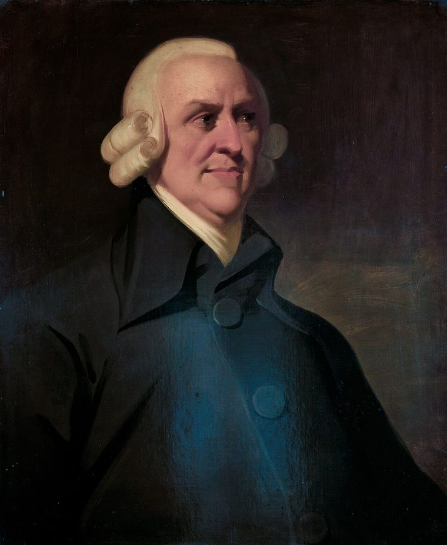
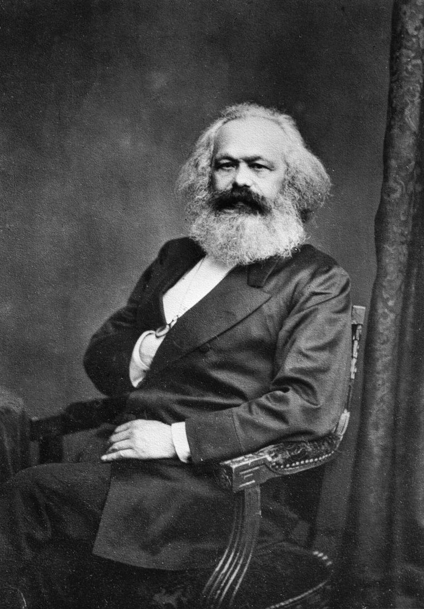
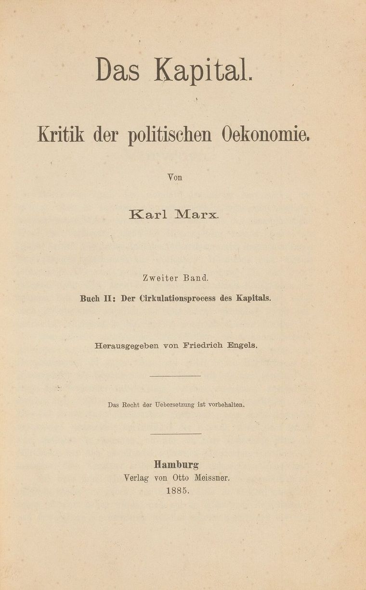
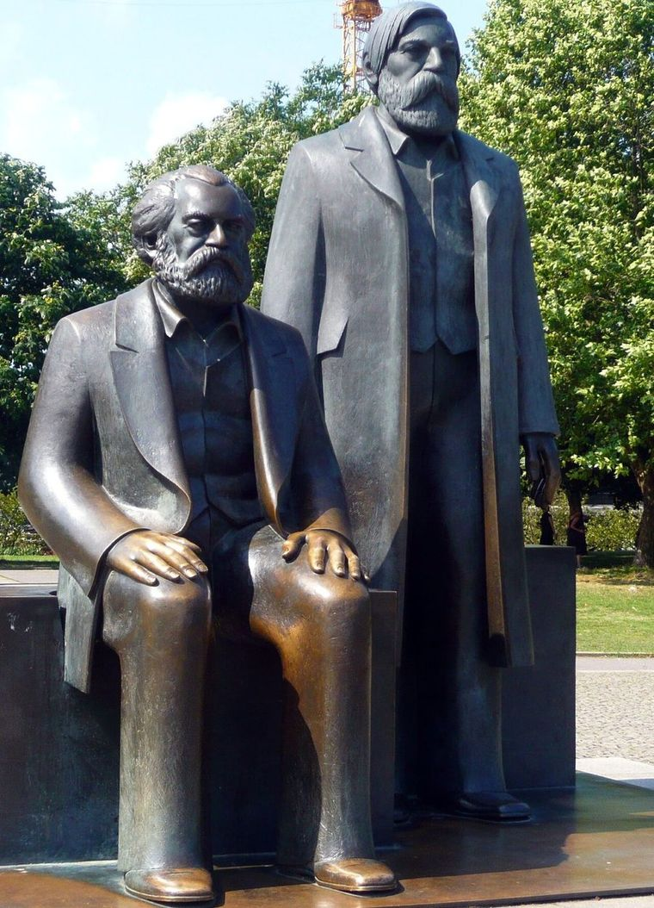

Economía política · Guía de lectura
Lo que nadie ve y lo que todos creen ver
Una lectura de El Capital, de la fábrica a la superficie
14,100 palabras~70 min de lecturaVida · tres tomos · legado
Un solo argumento
Resumen
El Capital es la obra que casi nadie leyó completa y que, aun así, reorganizó el siglo XX. Esta guía la recorre entera —la vida que la hizo posible, los tres tomos y lo que queda de ella— con una tesis de lectura: los tres tomos no son tres libros sino un solo argumento, que empieza donde nadie mira —el trabajo no pagado dentro de la fábrica— y termina donde todos creen ver —la ganancia, el interés y la renta como frutos naturales del capital, el dinero y la tierra—. El hilo que los cose no es la plusvalía sino el fetichismo: la manera en que una relación entre personas se presenta, necesariamente, como una propiedad de las cosas.
La vida hace de introducción: el hijo de un abogado que tuvo que bautizarse para conservar su oficio, el joven hegeliano al que un debate sobre el robo de leña empujó hacia la economía, el encuentro con Engels en París y la miseria del Soho, donde murieron tres de sus hijos mientras él leía a los economistas en el Museo Británico. El Tomo I entra en la fábrica: parte de la mercancía, separa el trabajo de la fuerza de trabajo y encuentra la plusvalía en un intercambio sin fraude —el capitalista paga exactamente lo que compra—; cierra con la acumulación originaria, el capital que llega al mundo «chorreando sangre y lodo». El Tomo II sale a la calle y pregunta si el capital social puede reproducirse sin que nadie lo planifique; la respuesta —proporciones entre sectores que ningún mercado garantiza de antemano— convierte la crisis en el único mecanismo de coordinación disponible. El Tomo III sigue a la plusvalía mientras se reparte entre industriales, comerciantes, banqueros y terratenientes, y llega a la tasa decreciente de ganancia, al capital ficticio y a la fórmula trinitaria, el fetichismo en su forma más acabada. El manuscrito se interrumpe a mitad de frase, en el capítulo sobre las clases.
El legado levanta dos inventarios con la misma exigencia: ocho tesis contra el capitalismo que no han perdido filo, y ocho objeciones a Marx que sus adversarios tienen razón en señalar —el problema de la transformación sigue abierto, la teoría del valor-trabajo es disputable, el empobrecimiento absoluto fue falsado, el cálculo económico sin precios nunca se resolvió—. Cada tomo trae además a sus intérpretes, de Lukács y Sohn-Rethel a Luxemburg, Grossman, Sraffa, Brenner y Harvey.
La conclusión no pide adhesión. Marx no deja un programa ni una receta para el socialismo; deja un método y un puñado de preguntas —quién produce la riqueza y quién se la apropia, qué relaciones se esconden detrás de las categorías del mercado, si el capitalismo tiene contradicciones o solo «desafíos»— que la economía dominante sigue esquivando. Se puede rechazar cada una de sus respuestas. Lo que no se puede, sin pagar un precio intelectual, es pensar el capitalismo del siglo XXI sin haberlo pasado por ese tamiz.
Semblanza
Karl Marx (Tréveris, 5 de mayo de 1818 – Londres, 14 de marzo de 1883) nació en una familia acomodada de la clase media renana. Su padre, Heinrich Marx, descendía de generaciones de rabinos y se convirtió al luteranismo hacia 1817 para no perder su profesión bajo la legislación antisemita prusiana. Esa experiencia familiar de "des-emancipación" marcó toda su sensibilidad política.
Su pensamiento se formó en el cruce de las "tres fuentes" que Lenin sistematizaría después: la filosofía clásica alemana (Hegel, Feuerbach), la economía política inglesa (Smith, Ricardo) y el socialismo francés (Saint-Simon, Fourier, Proudhon) — a las que sumó el cartismo británico y la observación directa de la miseria proletaria gracias a Friedrich Engels.
El Capital, Tomo I (Hamburgo, 14 de septiembre de 1867) es el fruto de un cuarto de siglo de estudios en el Museo Británico, escrito en la pobreza extrema del exilio londinense, donde Marx perdió a tres de sus hijos — la crítica más demoledora del siglo XIX al sistema que, según él, convertía a los seres humanos en mercancías.
Una familia entre el rabinato y la Ilustración
Marx nació el 5 de mayo de 1818 en la Brückengasse 664 de Tréveris (Trier), en la provincia del Bajo Rin del Reino de Prusia. Era el tercero de nueve hijos.
Su padre, Heinrich Marx (1777–1838), nacido Herschel Mordechai, descendía de una larga línea de rabinos: su linaje paterno daba rabinos a Tréveris desde 1723 —su propio padre lo fue—, y su hermano mayor, Samuel, heredaría después el cargo. Heinrich fue el primero de la familia en recibir educación secular; abogado desde 1815, hombre ilustrado, lector de Kant, Voltaire y Rousseau, deísta y partidario moderado de un constitucionalismo prusiano.
Su madre, Henriette Pressburg (1788–1863), era una judía neerlandesa de Nimega, de linaje rabínico que se remontaba al menos un siglo. Su hermana Sophie se casó con Lion Philips, próspero comerciante neerlandés de tabaco; dos nietos de ese matrimonio fundarían en 1891 la actual Philips Electronics.
La conversión de Heinrich y la huella del antisemitismo
Tréveris perteneció a la Francia revolucionaria y napoleónica desde 1794, lo que emancipó plenamente a los judíos. Tras 1815 y el Congreso de Viena, la Renania pasó a la Prusia conservadora, donde un edicto de 1812 prohibía a los judíos ejercer profesiones liberales. El ministro de Justicia prusiano rechazó la excepción solicitada por Heinrich.
Hacia agosto de 1817 Heinrich se bautizó en la Iglesia Evangélica luterana para conservar su carrera. Karl y sus hermanos fueron bautizados el 28 de agosto de 1824; su madre, en noviembre de 1825.
El historiador Shlomo Avineri (Karl Marx: Philosophy and Revolution, Yale, 2019) ha subrayado que esta "des-emancipación" —vivir como ciudadano de pleno derecho y luego ser despojado de ese estatus— dejó una marca profunda en la conciencia del joven Karl, cuyo tío era el rabino de la ciudad.
El barón Ludwig von Westphalen: el "amigo paternal"
Johann Ludwig von Westphalen (1770–1842), vecino y amigo de Heinrich Marx, tomó al joven Karl bajo su tutela intelectual desde los 12-13 años. Marx lo llamaría toda la vida su "querido amigo paternal" y le dedicaría su tesis doctoral. Westphalen le leía a Homero, Shakespeare, Dante y Goethe durante paseos por los viñedos del Mosela, y le presentó las ideas del socialista francés Henri de Saint-Simon.
Su hija, Jenny von Westphalen (1814–1881), cuatro años mayor que Karl, sería su esposa: se casaron el 19 de junio de 1843 y compartirían casi cuatro décadas de exilios y miseria.
Formación filosófica: de Bonn a Berlín
En octubre de 1835 Marx ingresó en la Universidad de Bonn para estudiar derecho. En 1836 su padre lo trasladó a la rigurosa Universidad de Berlín, donde abandonó progresivamente el derecho por la filosofía. La célebre carta del 10 de noviembre de 1837 a su padre describe su conversión a la filosofía de Hegel: "una cortina había caído, mi santo de los santos se había desgarrado".
En Berlín se incorporó al Doktorklub, el círculo de Jóvenes Hegelianos liderado por Bruno Bauer, que transformaba la dialéctica de Hegel en arma crítica contra la religión y el Estado prusiano. El movimiento incluía a David Friedrich Strauss, Arnold Ruge, Max Stirner y, más tarde, Ludwig Feuerbach.
Marx se doctoró en abril de 1841 en la Universidad de Jena con una tesis sobre Demócrito y Epicuro, dedicada a Westphalen. La expulsión de Bauer de la universidad en 1842 le cerró la carrera académica.
Periodista en Colonia: el descubrimiento de la economía
En enero de 1842 los liberales renanos lanzaron en Colonia la Rheinische Zeitung. Marx fue nombrado redactor jefe el 15 de octubre de 1842. Allí publicó los célebres "Debates sobre la ley contra los robos de leña" y los artículos sobre la miseria de los viticultores del Mosela.
En su prefacio de 1859 a la Contribución a la crítica de la economía política, Marx confesaría que precisamente estos debates "me dieron por primera vez la ocasión de ocuparme de cuestiones económicas". Bajo censura prusiana, el periódico fue prohibido el 1 de abril de 1843.
París, Engels y el nacimiento del comunismo

En octubre de 1843 Marx y Jenny emigraron a París, donde Marx estudió con voracidad a los economistas clásicos (Smith, Ricardo, Say) y a los socialistas franceses. Publicó Sobre la cuestión judía y la Introducción a la Crítica de la filosofía del derecho de Hegel, con la frase célebre: "la religión es el opio del pueblo".
El 28 de agosto de 1844, conoció a Friedrich Engels (1820–1895), hijo de un próspero industrial textil de Barmen, socio de la firma anglo-alemana Ermen & Engels en Mánchester. Engels acababa de documentar la miseria obrera en lo que sería La situación de la clase obrera en Inglaterra (1845). Diez días de conversaciones bastaron para sellar una colaboración de cuarenta años.
Expulsado de Francia en 1845, Marx se instaló en Bruselas, donde con Engels redactó La ideología alemana, formulando por primera vez la concepción materialista de la historia: "no es la conciencia la que determina la vida, sino la vida la que determina la conciencia".
En 1847 la Liga de los Comunistas encargó a Marx y Engels un manifiesto programático. El 21 de febrero de 1848 se imprimió en Londres el Manifiesto del Partido Comunista: "la historia de toda sociedad hasta nuestros días es la historia de la lucha de clases".
Londres: pobreza extrema y la redacción de El Capital

Tras la derrota de las revoluciones de 1848, Marx se trasladó a Londres en agosto de 1849, donde residiría hasta su muerte. Entre 1850 y 1856 los Marx vivieron en dos diminutos pisos del Soho, en condiciones que un espía prusiano describió como "una de las viviendas más pobres de Londres".
Tres de sus hijos murieron allí por desnutrición y enfermedad: Heinrich Guido (1850), Franziska (1852) y Edgar (1855), este último en brazos de su padre. De siete hijos, solo tres llegarían a la edad adulta.
Pese a todo, Marx pasaba sus días en la Sala de Lectura del Museo Británico, elaborando los manuscritos que se convertirían en los Grundrisse (1857-58) y, finalmente, el primer tomo de Das Kapital, publicado el 14 de septiembre de 1867. Los tomos II (1885) y III (1894) los editaría Engels póstumamente.
En 1864 fue cofundador de la Asociación Internacional de Trabajadores. En 1871 defendió la Comuna de París en La guerra civil en Francia, y al cumplirse un año la saludó como "el alba de la gran revolución social".
Las "tres fuentes" del marxismo (Lenin, 1913)
En 1913, Lenin sintetizó en Las tres fuentes y las tres partes integrantes del marxismo la genealogía intelectual del pensamiento marxista — un esquema simplificador pero pedagógicamente útil:
- Filosofía clásica alemana. De Hegel, Marx tomó la dialéctica pero rechazó el idealismo: "mi método dialéctico no sólo difiere del método hegeliano, sino que es su antítesis directa". De Feuerbach tomó la inversión materialista de la religión, pero la superó con la undécima tesis: "los filósofos no han hecho más que interpretar de diversos modos el mundo, pero de lo que se trata es de transformarlo".
- Economía política inglesa. De Smith y Ricardo adoptó —y radicalizó— la teoría del valor-trabajo, introduciendo el concepto de plusvalía para explicar de dónde provienen los beneficios: del trabajo no pagado al obrero.
- Socialismo francés. De Saint-Simon y Fourier tomó la crítica moral del capitalismo industrial; con Proudhon mantuvo una relación tensa, demolida en Miseria de la filosofía (1847).
A estas tres fuentes, historiadores como Hobsbawm, Stedman Jones y Liedman han añadido la Revolución Francesa de 1789, el cartismo británico y la antropología de pueblos no occidentales.
El siglo XIX europeo como contexto de su crítica

La Revolución Industrial transformó Inglaterra entre 1760 y 1850: mecanización del textil, máquina de vapor, ferrocarril, urbanización masiva. En 1819, el 4,5% de los obreros del algodón británico tenían menos de 10 años. Las jornadas de 14 a 16 horas en condiciones insalubres eran la norma. El Capital dedica capítulos enteros a documentar estos hechos a partir de informes oficiales británicos.
Las Revoluciones de 1848 sacudieron Francia, los Estados alemanes, Italia y el Imperio austriaco. Su derrota convenció a Marx de que la burguesía liberal había abandonado la causa de la libertad por miedo al proletariado.
La "Cuestión Social" —concepto acuñado en Francia y Alemania entre 1830 y 1840— designaba el conjunto de problemas derivados de la industrialización: pauperismo masivo, hacinamiento urbano, trabajo infantil, conflicto de clase. Marx pretendió no sólo describirla, sino explicar su lógica estructural.
Citas y anécdotas reveladoras
«La historia de toda sociedad hasta nuestros días no es sino la historia de la lucha de clases.» — Manifiesto del Partido Comunista, 1848
«La religión es el suspiro de la criatura oprimida, el corazón de un mundo sin corazón. Es el opio del pueblo.» — Crítica de la filosofía del derecho de Hegel, 1843-44
«Los filósofos no han hecho más que interpretar de diversos modos el mundo, pero de lo que se trata es de transformarlo.» — Tesis sobre Feuerbach, XI, 1845
«No es la conciencia de los hombres la que determina su ser, sino, por el contrario, su ser social el que determina su conciencia.» — Contribución a la crítica de la economía política, Prefacio, 1859
«El capital es trabajo muerto que, como un vampiro, sólo se vivifica chupando trabajo vivo.» — El Capital, Tomo I, cap. VIII
Anécdotas
- La hermana de Henriette casó con Lion Philips; sus descendientes fundarían en 1891 la Philips Electronics Company. Las cartas pidiéndole anticipos sobre la herencia salpican la correspondencia londinense de Marx.
- El espía prusiano que vigilaba a Marx en 1852 informó que "lavarse, peinarse y cambiarse de ropa son cosas que rara vez hace", pero también que "trabaja día y noche con una incansable resistencia cuando tiene mucho que hacer".
- El primer tomo de El Capital tuvo una recepción inicial muy fría en Alemania: Engels llegó a publicar reseñas hostiles seudónimas para provocar polémica y darle visibilidad.
Biografías de referencia
- Franz Mehring — Karl Marx: The Story of His Life (1918), la biografía clásica.
- Isaiah Berlin — Karl Marx: His Life and Environment (1939; ed. 2013).
- David McLellan — Karl Marx: A Biography (1973, 4.ª ed. 2006), la biografía estándar.
- Francis Wheen — Karl Marx: A Life (1999), vívida y narrativa.
- Jonathan Sperber — Karl Marx: A Nineteenth-Century Life (2013).
- Gareth Stedman Jones — Karl Marx: Greatness and Illusion (2016).
- Sven-Eric Liedman — A World to Win (2018).
- Shlomo Avineri — Karl Marx: Philosophy and Revolution (Yale, 2019).
Notas de precisión
- 1. La fecha exacta de la conversión de Heinrich Marx al luteranismo no es totalmente segura; el consenso académico actual la fija en agosto de 1817.
- 2. Cuidado con presentar a Marx como "judío" sin matices: fue bautizado a los 6 años y nunca tuvo formación religiosa judía. Su trasfondo es judío por linaje y experiencia social, pero su formación fue luterana y luego abiertamente atea.
- 3. Las "tres fuentes" de Lenin son una simplificación pedagógica, no un esquema histórico exhaustivo.
- 4. La pobreza extrema de Marx en Londres fue real, pero no continua: tras 1856 y gracias a Engels, el último Marx vivió con holgura modesta.
- 5. No confundir "marxismo" con lo que Marx escribió: él mismo declaró "yo no soy marxista".
- 6. Algunas cifras históricas (muertos en la Comuna, jornadas laborales) circulan en versiones distintas; son fiables como órdenes de magnitud.
Marx frente a Adam Smith: la crítica radical al capitalismo

Lo que Marx tomó de Smith
Marx nunca trató a Adam Smith como un simple enemigo ideológico. En el epílogo a la segunda edición alemana de El Capital (1873), distingue entre la "economía política clásica" —Smith, Ricardo— que investigaba honestamente las relaciones reales de producción, y la "economía vulgar" posterior, que se limitaba a racionalizar las apariencias del mercado. Smith era, para Marx, el científico burgués más avanzado posible antes de la propia crítica marxista.
De Smith adoptó dos pilares: la teoría del valor-trabajo (el valor de una mercancía se determina por la cantidad de trabajo socialmente necesario para producirla) y el análisis de la división del trabajo como motor de la productividad. Curiosamente, fue el propio Smith quien, en el libro V de La riqueza de las naciones, advirtió que la división extrema del trabajo podía embrutecer al obrero, reduciéndolo a la repetición de unas pocas operaciones simples. Marx retoma esa advertencia y la convierte en el núcleo de su concepto de alienación (Entfremdung): el trabajador que "no se afirma, sino que se niega" en su propio trabajo.
La ruptura decisiva: trabajo versus fuerza de trabajo
Smith y Ricardo nunca resolvieron una contradicción central: si las mercancías se intercambian según el trabajo que contienen, ¿de dónde sale el beneficio del capitalista? Marx encontró la salida distinguiendo entre trabajo (la actividad concreta) y fuerza de trabajo (la capacidad de trabajar, que el obrero vende como mercancía). El capitalista paga por la fuerza de trabajo su valor de cambio —lo necesario para reproducir al obrero—, pero se apropia de su valor de uso, que es capaz de generar más valor del que cuesta. Esa diferencia es la plusvalía: el origen, oculto a los ojos de Smith, de todo beneficio capitalista.
El fetichismo de la mercancía: leyes "naturales" frente a relaciones históricas
Marx acusó a Smith de tratar las categorías económicas —dinero, capital, salario, ganancia— como cosas naturales y eternas, en lugar de verlas como expresiones históricamente específicas de relaciones sociales entre personas. A esta ilusión la llamó fetichismo de la mercancía. Smith y Ricardo, al proyectar el individuo egoísta del mercado moderno sobre toda la historia humana —lo que Marx llamó irónicamente sus "robinsonadas"—, convertían un orden social transitorio en una ley de la naturaleza humana.
La "leyenda idílica" de la acumulación originaria
En el célebre capítulo XXIV de El Capital, Marx ridiculiza el relato que Smith y otros economistas clásicos ofrecían sobre el origen del capital: una historia de ahorro, laboriosidad y frugalidad de algunos individuos virtuosos. Frente a esa "leyenda idílica", Marx sostiene que la acumulación originaria del capital fue en realidad un proceso de expropiación violenta —cercamientos de tierras comunales, colonialismo, esclavitud, expulsión campesina— escrito, en sus propias palabras, "con letras de sangre y fuego".
La mano invisible frente a la anarquía de la producción
Donde Smith veía una mano invisible que armonizaba el interés egoísta de cada individuo con el bienestar general, Marx veía la anarquía de la producción: un sistema sin planificación consciente que genera ciclos recurrentes de sobreproducción y crisis, concentración creciente del capital, y una tendencia estructural a la pauperización relativa de la clase obrera. Para Marx, lo que Smith celebraba como armonía espontánea era, en realidad, la forma que toma la explotación de clase cuando se oculta detrás del intercambio "libre e igual" en el mercado.
| Dimensión | Adam Smith | Karl Marx |
|---|---|---|
| Origen del valor | Trabajo incorporado en la mercancía (teoría del valor-trabajo) | Adopta la misma teoría, pero distingue trabajo de fuerza de trabajo para explicar la plusvalía |
| Naturaleza del capitalismo | Orden "natural" derivado de la propensión humana al intercambio | Sistema históricamente específico y transitorio, no una ley eterna de la naturaleza humana |
| División del trabajo | Motor de la riqueza; advierte sus efectos embrutecedores pero los acepta como costo necesario | Mismo diagnóstico, llevado al concepto de alienación del trabajador |
| Origen del capital | Ahorro, frugalidad e industriosidad individual | Expropiación violenta y acumulación originaria ("letras de sangre y fuego") |
| Coordinación del mercado | Mano invisible: el interés propio promueve el bien común | Anarquía de la producción: crisis cíclicas, concentración del capital, antagonismo de clase |
| Rol del Estado | Limitado pero necesario: justicia, infraestructura, defensa, cierta regulación | Instrumento de la clase dominante bajo el capitalismo; debe ser transformado por la lucha de clases |
Tomo I — El proceso de producción del capital
La anatomía de la mercancía y el secreto de la ganancia
Resumen del Tomo I
El Tomo I parte de la célula más pequeña del capitalismo —una mercancía cualquiera— para demostrar algo enorme: que el sistema entero descansa sobre una explotación sistemática que el propio mercado vuelve invisible, sin que medie ningún fraude en el intercambio.
El mecanismo se sostiene en tres piezas: la teoría del valor-trabajo (el trabajo abstracto como sustancia común de toda mercancía), el fetichismo (por qué esa relación social aparece disfrazada de propiedad de las cosas) y la plusvalía (el trabajo no pagado que el capitalista se apropia legalmente).
25 capítulos en 7 secciones, desde la mercancía hasta la "llamada acumulación originaria". Esta parte recorre el argumento completo y cierra con el mapa de lo que vendrá en los Tomos II y III.
La mercancía: el átomo del mundo capitalista
Marx empieza, deliberadamente, por lo más pequeño y aparentemente más inocente: la mercancía individual. Su método es casi fisiológico — así como un biólogo estudia la célula para entender el organismo completo, Marx disecciona la mercancía para entender el capitalismo entero.
Toda mercancía tiene una doble naturaleza. El valor de uso es su utilidad concreta y cualitativa —el pan alimenta, el abrigo abriga— y no tiene nada de específicamente capitalista; existe en cualquier sociedad humana. El valor de cambio, en cambio, es la proporción en que se intercambia por otras mercancías, y ahí empieza el problema filosófico real: ¿qué hace posible que cosas cualitativamente tan distintas —una mesa de madera, veinte metros de lienzo— sean conmensurables, comparables en una proporción exacta?
El trabajo abstracto como sustancia del valor
Si dos cosas cualitativamente distintas pueden equipararse cuantitativamente, tiene que existir un "tercer término" común a ambas. Ese término no puede ser ninguna propiedad física o de uso —el lienzo y la mesa no comparten ninguna cualidad sensible—, así que tiene que ser algo que comparten como productos: ambos son producto de trabajo humano.
Pero no de trabajo concreto —el oficio específico del tejedor o del carpintero, irreducibles entre sí—, sino de trabajo abstracto: gasto de fuerza humana de trabajo en general, medido por su duración. Marx llama a esto el tiempo de trabajo socialmente necesario: no el tiempo que tardó este productor en particular, sino el que se requiere bajo las condiciones técnicas normales de una sociedad dada. Esta es la teoría del valor-trabajo, la piedra angular de todo lo que sigue.
El fetichismo de la mercancía: cuando las cosas cobran vida
Este es, probablemente, el pasaje más denso de todo el Tomo I — no por el vocabulario, sino porque Marx hace un movimiento filosófico de tres pisos a la vez. Vale la pena separarlos uno por uno.
- 1. La abstracción real. Cuando dos productores intercambian "20 varas de lienzo por 1 levita", tratan dos trabajos concretos completamente distintos —tejer, coser— como cantidades de la misma sustancia: trabajo humano abstracto. Esa sustancia no existe como cosa física; es una abstracción que se realiza en el acto mismo del intercambio, no en la cabeza de nadie. Por eso el filósofo Alfred Sohn-Rethel la llamó "abstracción real": algo que la práctica social produce, exista o no alguien pensándolo.
- 2. La inversión. Una vez que esa abstracción existe socialmente, el lenguaje del mercado dice "mi lienzo vale una levita" — como si el valor fuera una propiedad que el lienzo tiene, igual que un peso o un color. La relación social entre trabajadores se proyecta hacia afuera y aterriza en las cosas. Es la misma estructura lógica de un fetiche religioso: el poder que reside en la comunidad que lo venera se percibe como si residiera en el objeto.
- 3. Por qué no es simplemente "un error". Marx no dice que la gente se equivoque y haya que corregirla con más información. Dice que esta apariencia es objetivamente necesaria dado cómo está organizada la producción: productores privados e independientes que solo descubren si su trabajo fue socialmente útil después de llevarlo al mercado. El carácter social del trabajo no puede manifestarse de otra forma. No es ignorancia: es la forma de aparición necesaria de una estructura social real.
Una metáfora para fijarlo
Imagina un grupo de actores en un escenario tan oscuro que solo se ven las máscaras, nunca los rostros. Las máscaras empiezan a "hablarse", a "pelearse", a "subir y bajar de estatus" — y el público, e incluso a veces los propios actores, terminan creyendo que son las máscaras las que actúan. Eso es el fetichismo: no es que las máscaras mientan, es que la oscuridad del escenario —el mercado— hace estructuralmente invisibles a las personas detrás de ellas.
«El carácter místico de la mercancía no brota de su valor de uso.» — El Capital, Tomo I, cap. I, § 4 — El fetichismo de la mercancía
«…la mesa rompiese a bailar por su propio impulso.» — El Capital, Tomo I, cap. I, § 4 — sobre la mesa convertida en mercancía
La transformación del dinero en capital: el enigma de D–M–D′
Hasta aquí, circulación simple: M–D–M (vendo una mercancía para obtener dinero, y con ese dinero compro otra mercancía que necesito). Es un circuito con un fin en sí mismo: satisfacer una necesidad.
Pero el capital se mueve de otra forma: D–M–D′, donde D′ es mayor que D. Se invierte dinero para obtener más dinero. Marx plantea esto como un acertijo explícito: si en el mercado todo se intercambia por su valor equivalente, ¿de dónde sale ese incremento, esa plusvalía? No puede salir de la circulación misma —el intercambio justo no crea valor nuevo, solo lo transfiere—. Pero tampoco puede salir de fuera de la circulación, porque el capitalista necesita comprar y vender en el mercado para obtenerla. La plusvalía tiene que originarse en la circulación y, a la vez, no en la circulación. La resolución de este acertijo es uno de los momentos de mayor elegancia arquitectónica del libro.
La fuerza de trabajo y el secreto de la plusvalía
La solución de Marx: existe una mercancía muy particular en el mercado, cuyo valor de uso consiste, precisamente, en crear valor. Esa mercancía es la fuerza de trabajo — la capacidad de trabajar del obrero. El capitalista no compra "trabajo" (eso sería pagar ya por el resultado); compra la capacidad de trabajar durante una jornada determinada. Su valor se determina, como el de cualquier otra mercancía, por el tiempo de trabajo socialmente necesario para producirla y reproducirla: el costo de los medios de subsistencia del obrero.
El secreto, en una frase
El valor de la fuerza de trabajo (lo que cuesta reproducirla, lo que paga el salario) y el valor que esa fuerza de trabajo es capaz de crear trabajando son dos magnitudes distintas. Si reproducirla cuesta el equivalente a 6 horas, pero el capitalista contrata al obrero por una jornada de 10 o 12 horas, esas horas adicionales —el trabajo excedente— producen valor que el obrero no recupera en su salario. Ese valor no pagado es la plusvalía. No hay fraude en el intercambio: el capitalista paga exactamente el valor de la fuerza de trabajo. La explotación ocurre después, en el proceso de producción.
La jornada de trabajo: la lucha de clases hecha número
El capítulo VIII documenta, con detalle casi forense —informes de inspectores fabriles, testimonios médicos, casos de agotamiento extremo—, cómo la duración de la jornada no es un dato técnico neutral, sino el campo de batalla entre dos intereses opuestos: el capitalista, que quiere maximizar las horas de trabajo excedente, y el obrero, que defiende el tiempo necesario para su vida y su salud.
«¡Después de mí, el diluvio! es la divisa de todo capitalista y de toda nación capitalista.» — El Capital, Tomo I, cap. VIII
Plusvalía absoluta y plusvalía relativa
Dos estrategias, no mutuamente excluyentes, para aumentar la plusvalía. La absoluta alarga la jornada de trabajo: si el trabajo necesario son 6 horas y la jornada pasa de 10 a 12, la plusvalía crece directamente — con un límite físico evidente, el cuerpo humano y las 24 horas del día. La relativa no toca la jornada, sino que acorta el tiempo necesario para reproducir al obrero, aumentando la productividad: si las mejoras técnicas permiten producir sus medios de subsistencia en 4 horas en vez de 6, el trabajo excedente crece sin alargar la jornada.
| Dimensión | Plusvalía absoluta | Plusvalía relativa |
|---|---|---|
| Mecanismo | Alargar la jornada total de trabajo | Acortar el tiempo necesario vía productividad |
| Límite | Físico: 24 horas, resistencia del cuerpo | Técnico: en principio, sin techo evidente |
| Correlato histórico | Manufactura temprana, fábricas sin regulación | Maquinaria, gran industria, innovación constante |
| Forma de resistencia obrera | Lucha por la jornada legal máxima | Lucha por el control del ritmo y la técnica |
Los capítulos sobre cooperación, división del trabajo y manufactura, y maquinaria y gran industria narran una creciente subsunción real del trabajador bajo el capital: del obrero que controla su oficio (cooperación simple) al obrero fragmentado en una operación parcial (manufactura), hasta el obrero convertido en apéndice de la máquina (gran industria).
El salario como máscara y la ley general de la acumulación
El salario oculta la división del trabajo
El salario no aparece como el pago de una parte de la jornada (trabajo necesario), dejando la otra (trabajo excedente) sin pagar. Aparece como el pago de toda la jornada — como si cada hora trabajada estuviera remunerada. Esta es, para Marx, la mistificación más potente del sistema: hace invisible la división misma entre trabajo pagado y no pagado, y con ella, invisibiliza la explotación. Es el fetichismo aplicado específicamente a la fuerza de trabajo.
El ejército industrial de reserva
Al acumularse el capital, crece la proporción de capital constante (máquinas) frente al capital variable (fuerza de trabajo). Como solo el capital variable genera demanda de empleo, este proceso produce una superpoblación relativa —el "ejército industrial de reserva"—: una masa de trabajadores desempleados o subempleados que no es un fallo del sistema, sino una pieza funcional de él, porque disciplina los salarios a la baja.
La acumulación originaria: el origen violento del capital
¿Cómo surgió, originalmente, una clase que solo tiene su fuerza de trabajo para vender, y otra que posee los medios de producción para comprarla? La economía clásica lo cuenta como una fábula de ahorro virtuoso. Marx la llama, con sarcasmo deliberado, "la llamada acumulación originaria", y la reescribe como lo que históricamente fue: cercamientos violentos de tierras comunales en Inglaterra, expulsión forzada de campesinos, esclavitud colonial, saqueo — una separación violenta entre los productores y sus medios de producción, condición histórica previa de la acumulación capitalista, no su resultado.
«El capital viene al mundo chorreando sangre y lodo por todos los poros, desde los pies a la cabeza.» — El Capital, Tomo I, cap. XXIV — sobre el origen histórico del capital
El método de Marx: las jugadas que sostienen el edificio
- Crítica inmanente, no externa: Marx no rechaza las categorías de Smith y Ricardo —valor, trabajo, mercancía—; las acepta como punto de partida y muestra que, llevadas a su lógica final, producen una conclusión que sus autores no quisieron extraer.
- Método dialéctico: las categorías se despliegan y se transforman en contradicciones que exigen una categoría superior para resolverse —de la mercancía al dinero, del dinero al capital, del capital a la plusvalía.
- Apariencia versus esencia: en el fetichismo, en el salario, en el "libre" contrato de trabajo, Marx separa cómo se presenta fenoménicamente una relación social de cómo funciona realmente.
- Historización de las categorías: el valor, el dinero, el capital no son leyes naturales eternas, sino formas históricamente específicas del modo de producción capitalista.
Hacia los Tomos II y III
Tomo II — El proceso de circulación del capital
Las metamorfosis del capital (D–M…P…M′–D′) y sus tres formas: capital-dinero, capital-mercantil, capital-productivo. La rotación del capital —fijo y circulante— y su efecto sobre la plusvalía anual. Los célebres esquemas de reproducción simple y ampliada entre el Sector I (medios de producción) y el Sector II (medios de consumo), base de los modelos input-output posteriores.
Tomo III — El proceso global de la producción capitalista
La transformación de la plusvalía en ganancia y del valor en precio de producción —el célebre "problema de la transformación". La tendencia decreciente de la tasa de ganancia y sus contratendencias. Capital comercial, capital que devenga interés, renta de la tierra: cómo la plusvalía producida en la esfera productiva se redistribuye entre fracciones del capital que no la generan pero la reclaman.
| Dimensión | Tomo II | Tomo III |
|---|---|---|
| Tema central | Circulación y reproducción del capital | Distribución de la plusvalía entre fracciones del capital |
| Conceptos clave | Rotación, capital fijo/circulante, esquemas de reproducción | Precio de producción, tasa de ganancia, renta, interés |
| Pregunta filosófica | ¿Cómo se reproduce el capital social en su conjunto? | ¿Cómo se vuelve invisible el origen social de la ganancia? |
Lecturas que iluminan el fetichismo: cinco intérpretes

Alfred Sohn-Rethel — la abstracción real
En Trabajo intelectual y trabajo manual, explica mejor que nadie por qué la abstracción del intercambio es real y no mental, y traza un paralelo provocador con las categorías a priori de Kant: el pensamiento abstracto-conceptual de la filosofía moderna tendría su origen social en la abstracción real del intercambio mercantil.
Georg Lukács — la reificación
En Historia y conciencia de clase (1923), extiende el fetichismo a lo que llama reificación (Verdinglichung): no solo las mercancías parecen tener vida propia, sino que toda relación social bajo el capitalismo —incluida la conciencia misma de los individuos— empieza a tomar la forma de relaciones entre cosas calculables.
Slavoj Žižek — la fantasía ideológica
En El sublime objeto de la ideología (1989), da la lectura más útil para entender por qué seguimos reproduciendo el fetichismo aunque ya "sepamos" intelectualmente que las mercancías no tienen vida propia. Su fórmula: hoy el problema no es que la gente no sepa lo que hace, sino que sabe perfectamente lo que hace y, aun así, sigue haciéndolo. El fetichismo no vive en lo que sabemos, vive en lo que hacemos.
David Harvey — la puerta de entrada pedagógica
En A Companion to Marx's Capital (2010), la guía más recomendada para entrar a los tres primeros capítulos. Advierte a sus lectores que conviene "aguantar" esos capítulos iniciales, porque Marx empieza la obra sin justificar todavía por qué arranca con la mercancía — y eso desorienta a cualquier primer lector.
Michael Heinrich — el rigor filológico
En su Crítica de la economía política: una introducción a "El Capital" de Marx, corrige malentendidos comunes — por ejemplo, la idea de que el fetichismo sea simplemente "falsa conciencia" que la ciencia económica marxista ya superó. Es la referencia para quien busca precisión conceptual antes que metáforas.
Tomo II — El proceso de circulación del capital
La circulación del capital: por qué la reproducción social nunca está garantizada

Resumen del Tomo II
El Tomo I mostró de dónde sale la plusvalía: del trabajo no pagado en el proceso de producción. El Tomo II hace una pregunta distinta, y en cierto sentido más inquietante: una vez producida esa plusvalía, ¿puede el capital social en su conjunto reproducirse sin interrupción, año tras año, sin que nadie lo planifique?
La respuesta de Marx es incómoda precisamente para el capitalismo: la reproducción solo es posible bajo proporciones matemáticas muy específicas entre los dos grandes sectores de la producción social. Y el mercado capitalista no tiene ningún mecanismo que garantice esas proporciones de antemano — solo las impone, brutalmente, después de los hechos.
Aquí está la semilla de la teoría de las crisis: no como accidente externo —mala cosecha, pánico bancario, error de un banco central— sino como posibilidad estructural inscrita en la propia anatomía del capital. Esta parte recorre el argumento completo y cierra con el mapa hacia el Tomo III.
Las metamorfosis del capital y su ciclo
Si el Tomo I se quedaba dentro de la fábrica —en el proceso de producción donde se genera la plusvalía—, el Tomo II sale a la calle: sigue al capital en su recorrido completo por el mercado. Marx describe ese recorrido como un ciclo de tres metamorfosis: D–M…P…M′–D′. El capitalista empieza con dinero (D), lo convierte en mercancías —medios de producción y fuerza de trabajo— (M); esas mercancías entran al proceso productivo (P), donde se transforman en un nuevo producto que vale más que los insumos; ese producto se vende (M′), recuperando dinero acrecentado (D′).
Lo crucial es que el capital individual tiene que adoptar, sucesivamente, tres formas distintas: capital-dinero, capital-productivo y capital-mercancías. Y en cualquier momento dado, una parte del capital total de la sociedad está necesariamente "atrapada" en cada una de esas tres formas simultáneamente —algo está siendo comprado, algo se está produciendo, algo espera ser vendido—. Es, dice Marx, como una serpiente que muda de piel sin dejar nunca de ser la misma serpiente: cambia de forma constantemente, pero su identidad como capital que se autovaloriza permanece.
Por qué esto ya es una crítica, y no solo contabilidad
El ciclo D–M…P…M′–D′ se presenta, en la superficie, como un movimiento automático y autosuficiente —el dinero "se convierte en más dinero" casi por su propia naturaleza—. Pero ese automatismo es apariencia: el ciclo solo se completa si, en cada fase, hay alguien dispuesto a comprar exactamente lo que se necesita comprar y a vender exactamente lo que se necesita vender, en el momento oportuno. Si la mercancía producida no encuentra comprador, el ciclo se detiene: el valor creado en la fábrica queda congelado, sin "realizarse". El capital no es una sustancia que fluye por sí sola — exige, en cada instante, una coordinación social que nadie en particular garantiza.
La rotación del capital: el tiempo, convertido en plusvalía
Marx distingue el capital fijo (maquinaria, edificios: transfiere su valor al producto poco a poco, a lo largo de muchos ciclos) del capital circulante (materias primas, salarios: su valor se incorpora completo en cada ciclo). Y distingue también el tiempo de producción del tiempo de circulación —el tiempo que el capital pasa, improductivo, esperando ser comprado o transportado—.
Por qué le obsesiona al capital cada día de rotación
Aquí aparece un resultado que explica buena parte de la historia económica posterior: la cuota anual de plusvalía no depende solo de cuánta plusvalía se extrae en un ciclo productivo, sino de cuántas veces ese capital puede rotar en un año. Un capital que rota dos veces al año duplica, en términos anuales, la plusvalía de un capital idéntico que solo rota una vez. Esto significa que el capital no solo busca exprimir más trabajo por hora —como vimos en el Tomo I—; busca, con la misma urgencia estructural, acortar el tiempo de circulación: vender más rápido, cobrar más rápido, transportar más rápido.
Esa urgencia, no el simple "progreso" desinteresado, es para Marx la fuerza que explica la obsesión histórica del capitalismo por los ferrocarriles, el telégrafo, el crédito comercial y, hoy, la logística en tiempo real y los pagos instantáneos: no son regalos neutrales de la tecnología al bienestar humano, son respuestas estructurales a la presión de rotar el capital más rápido.
Reproducción simple: la pregunta que la economía clásica nunca se hizo en serio
Los economistas clásicos —incluido Adam Smith, a quien Marx dedica un capítulo entero de crítica— daban por hecho que la producción social, año tras año, simplemente "continuaba". Marx se pregunta algo más exigente: ¿en qué proporciones exactas tiene que dividirse la producción social para que todo lo producido encuentre comprador y el proceso pueda repetirse sin interrupción?
Para responder, divide la producción social total en dos grandes sectores: el Sector I, que produce medios de producción (máquinas, materias primas), y el Sector II, que produce medios de consumo (alimentos, ropa, vivienda). En el célebre ejemplo numérico que desarrolla en el capítulo XX, ilustra la condición de equilibrio que ambos sectores deben satisfacer para que la reproducción simple —sin crecimiento, solo repitiéndose a sí misma— se cierre sin sobras ni faltantes.
Esa igualdad —que el (v+p) de un sector calce, peso por peso, con el c del otro— no es un detalle técnico menor: es la condición sin la cual la reproducción social, sencillamente, no cierra. Y nada en el mercado capitalista la garantiza de antemano.
Acumulación y reproducción en escala ampliada
La reproducción simple es, en realidad, una ficción analítica útil: ningún capitalista invierte solo para mantenerse igual; invierte para acumular. La reproducción ampliada complica el problema anterior: ahora una parte de la plusvalía no se consume, sino que se reinvierte como capital adicional —nuevo capital constante, nueva fuerza de trabajo contratada—. Las condiciones de equilibrio entre los dos sectores se vuelven todavía más exigentes, porque ahora ambos sectores deben crecer en proporciones que sigan siendo compatibles entre sí, año tras año, en una economía que ya no se repite sino que se expande.
La anarquía de la producción: la pieza central de la crítica
Aquí está, para mí, el argumento más filosóficamente cargado de todo el Tomo II. Marx señala algo que parece casi una nota técnica al margen, pero que tiene consecuencias enormes: la proporcionalidad exacta entre sectores que la reproducción exige podría, en principio, calcularse y planificarse de antemano. De hecho, dice Marx explícitamente, ese cálculo equivaldría, en otro tipo de sociedad, al control consciente de la comunidad sobre los medios objetivos de su propia reproducción.
Pero el capitalismo no funciona así. No hay ningún organismo que decida, antes de que ocurra la producción, cuánto debe producir cada rama para que las cuentas cierren. Millones de capitalistas independientes deciden, cada uno por su cuenta, guiados únicamente por la expectativa de ganancia, sin conocer ni poder conocer de antemano cuánto están decidiendo producir, al mismo tiempo, todos los demás. La misma proporcionalidad que en una economía planificada sería ejercicio de control social, en la sociedad capitalista solo puede imponerse a posteriori, de forma violenta: mediante la crisis.
«Este tipo de superproducción equivale al control de la sociedad sobre los medios objetivos de su propia reproducción. Pero dentro de la sociedad capitalista sería un elemento de anarquía.» — El Capital, Tomo II, sección tercera — sobre la reproducción del capital fijo
La desproporción entre la producción de capital fijo y capital circulante, señala Marx, es una de las explicaciones favoritas de los economistas para las crisis — pero lo que a ellos les sorprende como anomalía, para Marx es una consecuencia necesaria de cómo está organizada la producción capitalista, incluso en el caso ideal de una reproducción simple sin perturbaciones externas.
Vale la pena —en honor a la precisión, no a la concesión— anotar que esta no es una conclusión que toda la economía comparta. Los economistas neoclásicos sostendrían que el sistema de precios cumple exactamente la función coordinadora que Marx declara estructuralmente ausente: una sobreproducción en el Sector I encarece sus insumos y abarata sus precios de venta, lo cual envía la señal —sin necesidad de planificador alguno— para que el capital se redirija hacia donde hace falta. Para esa tradición, las crisis recurrentes se explican mejor por shocks externos, ciclos de crédito o errores de política monetaria, no por una contradicción inherente al capitalismo. La disputa entre estas dos lecturas —desproporción estructural versus mecanismo de precios autorregulado— sigue, de hecho, sin resolverse del todo en la teoría económica contemporánea.
Balance: qué cambia respecto al Tomo I
El Tomo I demostró que producir plusvalía es posible y necesario para el capital. El Tomo II demuestra algo igualmente importante: producir plusvalía no basta. Esa plusvalía tiene que "realizarse" —encontrar comprador, convertirse efectivamente en dinero— para que el ciclo se cierre. Entre la producción de valor y su realización en el mercado se abre una grieta que el Tomo I, centrado en la fábrica, no podía ver. Esa grieta es exactamente el espacio donde anidan las crisis de sobreproducción: se puede producir "correctamente", explotando "correctamente" la fuerza de trabajo, y aun así no encontrar comprador para lo producido.
Hacia el Tomo III
El Tomo II resolvió —parcialmente, y bajo supuestos muy abstractos— cómo se reproduce el capital social si todo se vende a su valor exacto. El Tomo III abandona ese supuesto simplificador y pregunta qué ocurre cuando la plusvalía producida tiene que repartirse entre distintas fracciones del capital —industrial, comercial, bancario, terrateniente— que compiten entre sí por una porción de una masa de plusvalía que ninguna de ellas, por separado, controla del todo.
| Dimensión | Tomo II | Tomo III |
|---|---|---|
| Pregunta central | ¿Puede el capital social reproducirse sin interrupción? | ¿Cómo se distribuye la plusvalía entre las fracciones del capital? |
| Supuesto que se abandona | — | Que las mercancías se venden exactamente a su valor |
| Concepto nuevo central | Condición de equilibrio entre Sector I y Sector II | Precio de producción, tasa media de ganancia |
| Ley más controvertida | La anarquía como fuente estructural de crisis | La tendencia decreciente de la tasa de ganancia |
Lecturas que iluminan la teoría de las crisis
Rosa Luxemburg — ¿puede el capitalismo expandirse sin un "afuera"?
En La acumulación del capital (1913), Luxemburg sostiene que los esquemas de reproducción ampliada de Marx, llevados a sus últimas consecuencias, no logran explicar de dónde sale la demanda adicional necesaria para absorber una producción que crece indefinidamente dentro de un capitalismo puro, cerrado sobre sí mismo. Su tesis: el capitalismo necesita estructuralmente mercados no capitalistas —colonias, economías campesinas— para resolver ese problema de realización, lo cual convierte al imperialismo en una necesidad económica, no solo política.
Henryk Grossman — la respuesta crítica desde el rigor matemático
Grossman acusó a Luxemburg de un error metodológico: confundir un modelo abstracto —diseñado solo para mostrar que la acumulación es lógicamente posible sin contradicción aritmética— con una descripción literal de la realidad histórica. Para Grossman, el límite real del capitalismo no está en la falta de mercados externos, sino en una insuficiencia de ganancia para seguir valorizando un capital cada vez mayor — un argumento que conecta directamente con la tasa decreciente de ganancia que veremos en el Tomo III.
V. I. Lenin — la disputa entre dos teorías de la crisis
Lenin dedicó a exactamente este problema varios textos de juventud (1893–1899), en su polémica con los populistas rusos. Lenin distingue con precisión dos familias de teorías de la crisis: las que la explican como déficit de consumo (la demanda de los trabajadores no alcanza para comprar todo lo producido) y las que la explican como anarquía de la producción (la contradicción entre el carácter social del proceso productivo y el carácter privado con que cada capitalista decide cuánto producir). Lenin defiende que la segunda es la explicación más profunda, y que el déficit de consumo es, en el mejor de los casos, un síntoma secundario.
Paul Sweezy — la síntesis para el lector de habla inglesa
En The Theory of Capitalist Development (1942), Sweezy ofrece la reconstrucción más clara y didáctica del debate Luxemburg–Grossman para audiencias no especializadas, y es, todavía hoy, el punto de entrada estándar a la teoría marxista de las crisis en el mundo angloparlante.
David Harvey — los límites del capital
En The Limits to Capital (1982), Harvey retoma los esquemas de reproducción del Tomo II para construir una teoría de las crisis en múltiples niveles —desproporción sectorial, subconsumo, sobreacumulación— y para mostrar cómo el capitalismo "resuelve" temporalmente sus contradicciones desplazándolas en el espacio: nuevas geografías, nueva infraestructura, nuevos mercados. Es la puerta de entrada más completa para conectar el Tomo II con la geografía económica contemporánea.
Tomo III — El proceso global de la producción capitalista
El proceso global: distribución de la plusvalía, tasa de ganancia y la forma más profunda del fetichismo

Resumen del Tomo III
El Tomo I mostró dónde se produce la plusvalía: en la fábrica, en el trabajo no pagado. El Tomo II preguntó si puede reproducirse indefinidamente. El Tomo III hace la pregunta final y más compleja: una vez producida esa plusvalía, ¿cómo se reparte entre el capital industrial, el comercial, el bancario y los terratenientes — fracciones que la reclaman sin haberla generado?
La respuesta exige un giro conceptual mayor: las mercancías no se venden a su valor, sino a su precio de producción (costo + ganancia media). Esto parece contradecir la teoría del valor-trabajo, pero Marx argumenta que es su despliegue necesario a nivel del capital social en su conjunto.
Y en el camino, Marx descubre —o deduce— lo que para muchos intérpretes es su hallazgo más oscuro y más poderoso: la tendencia decreciente de la tasa de ganancia, que lleva inscrita, en la propia lógica del desarrollo capitalista, una contradicción que el sistema no puede resolver desde dentro. Esta parte cierra la trilogía.
El problema de la transformación: del valor al precio
La teoría del valor-trabajo establece que el valor de una mercancía depende del tiempo de trabajo socialmente necesario para producirla. Pero cualquier persona que observe el mercado real nota algo desconcertante: los capitalistas de distintas ramas, aunque emplean proporciones muy distintas de trabajo vivo respecto al capital en maquinaria, no obtienen tasas de ganancia tan dispares. Un sector intensivo en capital no gana casi nada porque usa poca fuerza de trabajo; uno intensivo en trabajo no gana astronómicamente. Las tasas de ganancia tienden a nivelarse. ¿Por qué?
La respuesta de Marx: la competencia entre capitales produce una tasa media de ganancia que se distribuye entre todas las ramas en proporción al capital invertido, independientemente de cuánto trabajo vivo emplee cada una. Las mercancías no se venden a su valor sino al precio de producción: su precio de costo más la ganancia media que corresponde a ese capital según la tasa general.
«El precio de producción de la mercancía equivale a su precio de costo más la ganancia que porcentualmente le corresponde con arreglo a la cuota de ganancia general, o lo que es lo mismo, equivale a su precio de costo más la ganancia media.» — El Capital, Tomo III, cap. IX — La transformación de los valores en precios de producción
El debate más largo de la historia del marxismo económico
El "problema de la transformación" —¿es el paso del valor al precio de producción matemáticamente consistente?— ha ocupado a economistas desde finales del siglo XIX hasta hoy. Ladislaus von Bortkiewicz demostró en 1907 que la solución de Marx era algebraicamente incompleta (no transformó simultáneamente los insumos). El debate técnico que siguió enfrentó a Sweezy, Sraffa, Morishima, Steedman y decenas más. Lo que importa filosóficamente, más allá de la técnica: Marx sostiene que la superficie de los precios y las ganancias no contradice la lógica del valor — la oculta. El precio de producción es el fetichismo llevado a su nivel más abstracto: las categorías del mercado (ganancia, interés, renta) aparecen como si fueran propiedades naturales del dinero, el trabajo y la tierra, borrando completamente su origen en la extracción de plusvalía.
La ley de la tendencia decreciente de la tasa de ganancia
Este es, para muchos lectores, el argumento más audaz —y más debatido— de los tres tomos. El mecanismo es sencillo de enunciar pero de consecuencias enormes.
A medida que el capitalismo se desarrolla, los capitalistas compiten entre sí incorporando más maquinaria y tecnología para reducir costos (plusvalía relativa, como vimos en el Tomo I). Esto eleva lo que Marx llama la composición orgánica del capital: la proporción de capital invertido en maquinaria y materias primas (capital constante) crece respecto al invertido en fuerza de trabajo (capital variable). Pero —y aquí está la trampa— solo el capital variable genera plusvalía. Las máquinas transfieren su valor al producto, pero no crean valor nuevo. Por tanto, a medida que la composición orgánica sube en toda la economía, la masa total de plusvalía crece, pero en relación al capital total invertido —que crece mucho más rápido— la tasa de ganancia tiende a declinar.
Las contratendencias: por qué el sistema no colapsa inmediatamente
Marx es explícito: la llama "tendencia", no ley mecánica inevitable, precisamente porque identifica fuerzas que la contrarrestan. Las principales son: el aumento en la tasa de explotación (extraer más plusvalía de cada obrero por hora), el abaratamiento de los elementos del capital constante (la tecnología misma baja el costo de las máquinas), el comercio exterior (importar materias primas y medios de subsistencia más baratos), y la creación de un ejército de reserva de trabajadores (que deprime los salarios). La historia del capitalismo del siglo XX —precarización, globalización productiva, financiarización— puede leerse, en parte, como la búsqueda desesperada de esas contratendencias cuando las anteriores se agotan.
«El verdadero límite de la producción capitalista es el mismo capital: el hecho de que aquí la producción sólo es producción para el capital y no, a la inversa, los medios de producción simples medios para ampliar la estructura del proceso de vida de la sociedad de los productores.» — El Capital, Tomo III, cap. XV — Desarrollo de las contradicciones internas de la ley
La contradicción que no tiene solución interna
El capítulo XV es, en mi lectura, el más filosóficamente explosivo de los tres tomos. Marx llega aquí a una conclusión que ningún economista clásico podía aceptar: el capitalismo no tiene ningún mecanismo interno capaz de resolver de forma permanente la contradicción entre su misión histórica —desarrollar las fuerzas productivas sin límite— y sus condiciones sociales —que esa producción sirva a la valorización del capital, no a la satisfacción de necesidades humanas—. El medio (la expansión productiva) choca constantemente con el fin (la ganancia del capital existente). Las crisis no son correcciones del sistema: son el sistema funcionando exactamente como tiene que funcionar.
Crédito y capital ficticio: el dinero que se desconecta del valor
La Sección Quinta —crédito, capital bancario, capital ficticio— es la más fragmentaria del Tomo III (Engels mismo advirtió que trabajó con notas muy incompletas), pero también la más perturbadoramente actual. Marx observa que el sistema de crédito, en su desarrollo, produce una forma de capital radicalmente nueva: el capital ficticio.
Un bono del Estado, una acción de empresa, un título hipotecario: son papeles cuyo precio representa el derecho a recibir un flujo futuro de ingresos capitalizado a la tasa de interés del momento. Su valor de mercado sube y baja según expectativas, tasas de descuento y especulación — sin ninguna conexión directa, inmediata, con la plusvalía que se esté produciendo en las fábricas en ese instante. Es valor que aparece sin que haya trabajo que lo respalde en el presente.
El crédito también tiene, para Marx, una función ambivalente: por un lado acelera la acumulación y la concentración del capital (los grandes capitales acaparan crédito más barato); por otro, al socializar el riesgo y desconectar temporalmente la inversión de la plusvalía disponible, hace posibles las grandes crisis financieras que el capitalismo del siglo XIX ya conocía y el del XX perfeccionaría.
La renta del suelo: plusvalía que no produce el capital
La Sección Sexta analiza la renta del suelo. La pregunta es: ¿por qué los propietarios de tierras reciben una parte de la plusvalía social si ellos no producen nada? La respuesta de Marx distingue dos tipos: la renta diferencial surge de la diferencia de fertilidad o ubicación entre distintas tierras — los capitalistas que trabajan tierras más productivas obtienen una ganancia extra, que en competencia termina transferiéndose al propietario como renta. La renta absoluta surge del monopolio de la propiedad territorial en sí: como ningún capitalista puede producir sin acceder a algún pedazo de tierra, los terratenientes como clase tienen la posibilidad de exigir una renta mínima incluso por la tierra más pobre.
Lo que importa críticamente: la renta del suelo revela que la plusvalía producida por los obreros industriales se redistribuye hacia una clase —los terratenientes— que no participa en absoluto en la producción. Es el ejemplo más transparente de cómo el capitalismo separa la apropiación del valor de su producción.
La fórmula trinitaria: el fetichismo en su forma más perfecta
El capítulo XLVIII —"La fórmula trinitaria"— es el clímax filosófico de los tres tomos, el lugar donde Marx muestra que el sistema de distribución capitalista produce, en su superficie, la forma de fetichismo más completa y más difícil de penetrar que existe.
La economía política vulgar —y el sentido común capitalista— presenta la generación de riqueza mediante tres fuentes "naturales": el capital genera ganancia, la tierra genera renta, el trabajo genera salario. Capital → ganancia; tierra → renta; trabajo → salario. Esta trinidad tiene la apariencia de una ley natural tan obvia como que el fuego calienta. Y sin embargo, para Marx, es la forma de mistificación más acabada de todo el sistema.
«¡Capital, tierra y trabajo, muy bien! Pero el capital no es una cosa material, sino una determinada relación social de producción, correspondiente a una determinada formación histórica de la sociedad, que toma cuerpo en una cosa material y le infunde un carácter social específico.» — El Capital, Tomo III, cap. XLVIII — La fórmula trinitaria
La crítica de Marx es doble. Primero, el capital no es una cosa —es una relación social histórica. Decir que "el capital produce ganancia" es como decir que "el cuchillo asesina" — en ambos casos se borra el agente humano detrás del objeto. Segundo, la trinidad naturaliza la división de la riqueza entre estas tres categorías como si fuera el orden eterno de las cosas, ocultando que las tres —ganancia, renta e interés— son, en última instancia, fracciones distintas de la misma fuente: el trabajo no pagado del obrero.
Es el fetichismo completado: en el Tomo I, las relaciones entre personas aparecían como relaciones entre cosas (mercancías); aquí, en el Tomo III, las relaciones entre personas aparecen como propiedades naturales de tres tipos de cosas (capital, tierra, trabajo). La ilusión se ha vuelto sistémica, constitutiva, invisible desde dentro.
Las clases: el último capítulo, interrumpido
El Tomo III termina de manera que resulta casi simbólica: el capítulo LII, "Las clases", se interrumpe a mitad de frase. Engels lo anota con sencillez: "Al llegar aquí se interrumpe el manuscrito." Marx no llegó a terminar lo que sería la conclusión política de toda la obra.
Lo que alcanzó a escribir es, sin embargo, preciso. Define las tres grandes clases de la sociedad capitalista —obreros asalariados, capitalistas, terratenientes— no por su rango o estilo de vida, sino por su relación con las fuentes de ingreso: salario, ganancia, renta. Y señala que estas categorías, en apariencia descriptivas, son en realidad la forma fenoménica de la relación de explotación que los tres tomos han venido describiendo desde su primera página.
«Los propietarios de simple fuerza de trabajo, los propietarios de capital y los propietarios de tierras, cuyas respectivas fuentes de ingreso son el salario, la ganancia y la renta del suelo, forman las tres grandes clases de la sociedad moderna, basada en el régimen capitalista de producción.» — El Capital, Tomo III, cap. LII — Las clases (último capítulo)
La obra queda abierta donde más prometía cerrarse. No es un accidente biográfico menor: es la señal de que el proyecto de Marx —una crítica total de la economía política capitalista— era, en el sentido más literal, inagotable.
Balance: lo que los tres tomos construyen juntos
| Tomo | Pregunta | Concepto central | Forma del fetichismo |
|---|---|---|---|
| I | ¿De dónde sale la plusvalía? | Fuerza de trabajo / Trabajo no pagado | La mercancía con "vida propia" |
| II | ¿Puede el capital reproducirse sin fin? | Condiciones de la reproducción social | El ciclo del capital como automatismo |
| III | ¿Cómo se distribuye y qué límites tiene? | Tasa de ganancia / Precio de producción | La trinidad: capital-tierra-trabajo como fuentes "naturales" |
Lecturas clave para el Tomo III
Ladislaus von Bortkiewicz y Ian Steedman — la crítica técnica al problema de la transformación
Bortkiewicz (1907) demostró algebraicamente que Marx no transformó simultáneamente los insumos al pasar de valores a precios de producción. Ian Steedman en Marx después de Sraffa (1977) llevó esta crítica al límite: los precios relativos y la tasa de ganancia pueden determinarse directamente desde las condiciones técnicas de producción, sin necesidad de pasar por el valor. La Nueva Interpretación (Foley, Duménil) y la Teoría del Valor Monetario (Moseley) son las principales respuestas marxistas contemporáneas a este desafío.
Piero Sraffa — la alternativa desde dentro de la economía clásica
En Producción de mercancías por medio de mercancías (1960), Sraffa reconstruyó la teoría del valor y la distribución sin recurrir a categorías subjetivas neoclásicas —pero tampoco al trabajo abstracto de Marx. Su marco permite establecer precios y tasa de ganancia a partir de los coeficientes técnicos de producción y el salario real, en lo que muchos consideran la alternativa más robusta tanto al marxismo como al neoclasicismo.
Robert Brenner — la tasa de ganancia y el largo declive
En The Economics of Global Turbulence (1998), Brenner aplica la tendencia decreciente de la tasa de ganancia al análisis empírico del capitalismo de posguerra, argumentando que el estancamiento y las crisis desde 1973 pueden explicarse, en gran medida, por una caída secular de la rentabilidad en el sector manufacturero de los países avanzados. Es el intento más serio de conectar la teoría abstracta de Marx con datos históricos medibles.
Michel Husson y Özlem Onaran — la financiarización como contratendencia
Economistas contemporáneos que muestran cómo la explosión financiera de las últimas décadas —el capital ficticio hipertrofiado del que habla el capítulo XXV— funciona como contratendencia temporal a la caída de la tasa de ganancia en la economía real: el capital que no encuentra rentabilidad en la producción migra a la esfera financiera, infla activos, y eventualmente produce la clase de colapso que vimos en 2008.
Legado — Una crítica inacabada
Las ideas que transformaron el mundo, el impacto de una obra que nadie terminó de leer completa, y las preguntas que el capitalismo del siglo XXI sigue sin responder
Las ideas que sostienen el edificio: síntesis de los tres tomos
El valor es trabajo. Toda riqueza en el capitalismo —cada mercancía, cada acción, cada propiedad— representa, en última instancia, tiempo de trabajo humano cristalizado. No es un precio, no es una preferencia subjetiva: es trabajo abstracto socialmente necesario. Esta afirmación es la raíz de todo lo que sigue.
La explotación es estructural, no moral. El capitalista no "roba" al obrero en el sentido de engañarlo. Le paga exactamente el valor de su fuerza de trabajo. Pero lo que compra es la capacidad de trabajar, y esa capacidad produce más valor del que cuesta reproducirla. La explotación no es una distorsión del capitalismo: es su condición de posibilidad.
El capitalismo produce su propia apariencia de justicia. El fetichismo no es propaganda ni mentira consciente: es la forma objetiva en que las relaciones sociales se presentan necesariamente en una sociedad de productores privados. Por eso no se disuelve con educación: requiere transformar las relaciones de producción mismas.
| Idea | Formulación en El Capital | Reverso crítico |
|---|---|---|
| Teoría del valor-trabajo | El valor es trabajo abstracto socialmente necesario | El precio de mercado oculta y revela el valor simultáneamente |
| Plusvalía | El trabajo excedente no pagado es la fuente de toda ganancia capitalista | Sin explotación del trabajo vivo no hay acumulación posible |
| Fetichismo | Las relaciones entre personas se presentan como relaciones entre cosas | La ilusión no es subjetiva: la produce la estructura misma del intercambio |
| Reproducción ampliada | La acumulación exige proporciones precisas entre sectores que el mercado no garantiza | La crisis no es fallo externo: es el único mecanismo de coordinación disponible |
| Tasa decreciente de ganancia | El desarrollo capitalista erosiona, estructuralmente, la tasa de ganancia media | Lo que es racional para cada capital es destructivo para el capital como totalidad |
| Capital ficticio | El crédito produce valor que aparece sin trabajo que lo respalde en el presente | La esfera financiera se autonomiza hasta chocar, en las crisis, con el valor real |
| Acumulación originaria | El capitalismo no nació del ahorro virtuoso sino de la violencia histórica | El "libre contrato" descansa sobre una expropiación que el mercado vuelve invisible |
Las críticas de Marx al capitalismo: ocho tesis que no han perdido filo
La obra de Marx no es solo descripción ni solo predicción: es una crítica en el sentido filosófico preciso — un análisis que muestra las contradicciones internas de su objeto, las que el propio objeto no puede reconocer sin ponerse en cuestión a sí mismo. Estas son las ocho tesis críticas que atraviesan los tres tomos:
① La producción no está organizada para satisfacer necesidades humanas
El capitalismo produce lo que es rentable, no lo que es necesario. La salud, la educación, la vivienda, la nutrición — todas sucumben a la lógica de la ganancia. Si hay mercado solvente para un producto superfluo y no lo hay para uno vital, el capitalismo produce el superfluo. Esta no es una disfunción corregible desde dentro: es la estructura misma del sistema, en el que el valor de uso queda subordinado al valor de cambio desde el primer capítulo del Tomo I.
② La libertad en el mercado coexiste con la coerción en la producción
El trabajador "elige libremente" a quién vender su fuerza de trabajo. Pero esa libertad presupone que ya no tiene acceso independiente a los medios de producción — condición producida históricamente por la violencia de la acumulación originaria. Es libertad formal sobre la base de una dependencia estructural. Marx llama a esto, con elegancia, "el edén de los derechos humanos innatos": justo antes de que el comprador y vendedor "crucen el umbral" hacia el proceso de producción, donde la igualdad desaparece.
③ La innovación técnica empobrece a quienes trabajan con ella
La maquinaria que aumenta la productividad podría reducir la jornada de trabajo para todos. En el capitalismo, reduce el precio de la fuerza de trabajo (porque reduce el costo de los bienes de subsistencia), intensifica el ritmo de producción, y desplaza a los trabajadores creando el ejército industrial de reserva. La tecnología no es neutra: su impacto sobre los trabajadores depende de quién la posee y con qué fin la emplea.
④ La concentración del capital es una ley, no una anomalía
La competencia entre capitales no produce equilibrio entre unidades pequeñas y eficientes: produce concentración. El capital grande puede invertir en tecnología que el pequeño no puede permitirse, ganar cuota de mercado, eliminar competidores, y absorberlos. La tendencia a la monopolización no es una distorsión corregible con política antimonopolio: es la dirección natural del movimiento del capital, inscrita en sus propias leyes de funcionamiento.
⑤ Las crisis son endémicas, no accidentales
Las crisis de sobreproducción, de sobreacumulación, de desvalorización masiva del capital — no son shocks externos al sistema. Son el mecanismo mediante el cual el capitalismo "resuelve" temporalmente sus contradicciones internas: destruye capital excedente, baja salarios vía desempleo, y restablece condiciones para una nueva fase de acumulación. Cada crisis lleva los gérmenes de la siguiente.
⑥ El trabajo asalariado aliena al trabajador de su propio acto de producción
Este argumento —más explícito en los Manuscritos de 1844 que en El Capital, aunque presente en él— sostiene que el trabajo humano, lejos de ser solo un medio para un fin exterior (el salario), es la actividad en la que el ser humano se objetiva, se reconoce, desarrolla sus capacidades. El trabajo asalariado —controlado por otro, fragmentado, ejecutado contra el propio deseo— convierte esa actividad esencialmente humana en su opuesto: en algo que el trabajador rehúye en lugar de buscar.
⑦ El Estado no es árbitro neutral: es instrumento de clase
La legislación, los tribunales, la fuerza pública: en el análisis de Marx, el Estado capitalista no flota sobre las clases sino que emerge de las relaciones de producción y, en última instancia, garantiza las condiciones de su reproducción. Esto no significa que el Estado no pueda ser campo de lucha — la jornada legal de trabajo, el derecho sindical, el salario mínimo son conquistas reales — pero sí que esas conquistas se dan dentro de un marco que no cuestiona la relación capital-trabajo en sí.
⑧ El capitalismo es históricamente específico, no eterno
Quizás la tesis más subversiva de todas: el capitalismo no es la forma natural y permanente de organizar la economía humana. Es un modo de producción históricamente determinado, con un origen específico (la acumulación originaria) y, por tanto, con una posibilidad de fin. Marx evita describir en detalle qué vendría después —es cuidadoso al respecto—, pero la historización completa de las categorías económicas abre ese horizonte de posibilidad que el capitalismo, por definición, quiere mantener cerrado.
«Si el régimen capitalista de producción constituye un medio histórico para desarrollar la capacidad productiva material, envuelve al propio tiempo una contradicción constante entre esta misión histórica y las condiciones sociales de producción propias de este régimen.» — El Capital, Tomo III, cap. XV
El impacto histórico: una obra que nadie leyó completa pero que transformó el siglo XX
- 1867 — Publicación del Tomo I. El Tomo I se publica en Hamburgo con una tirada modesta. Los economistas burgueses lo ignoran en su mayoría. Engels orquesta reseñas en la prensa obrera para darle visibilidad. En 1872 la censura rusa autoriza la traducción —la primera a otra lengua— porque el censor juzga que pocos la leerán y menos aún la entenderán.
- 1871 — La Comuna de París. La primera experiencia de gobierno obrero en la historia dura 72 días. Marx la analiza en La guerra civil en Francia y la ve como prueba de que el Estado burgués no puede simplemente "tomarse" sino que debe destruirse y reemplazarse. Engels describirá después a la Comuna como "la dictadura del proletariado".
- 1885–1894 — Tomos II y III. Engels publica póstumamente los tomos II y III. Son fragmentarios, incompletos, pero completan el argumento teórico central. Su lectura seguirá siendo minoritaria incluso entre marxistas: la mayoría opera sobre el Tomo I y el Manifiesto.
- 1917 — Revolución rusa. Lenin y los bolcheviques toman el poder en un país agrario y semifeudal — el opuesto al proletariado industrial desarrollado que Marx suponía sería el sujeto revolucionario. El marxismo-leninismo se convierte en ideología de Estado de la primera potencia socialista. En 50 años, más de un tercio de la humanidad vivirá bajo gobiernos que se reclaman de Marx.
- 1930s — La Gran Depresión y el keynesianismo. La crisis de 1929 parece dar la razón a las tesis marxistas sobre la inevitabilidad de las crisis. Pero la respuesta dominante no es socialista: es keynesiana. Keynes demuestra que es posible estabilizar el capitalismo mediante la intervención estatal en la demanda sin cuestionar la propiedad privada. El Estado de Bienestar se construye, en parte, como alternativa al marxismo.
- 1949–1976 — Descolonización y marxismos del Tercer Mundo. Marx es adoptado, adaptado y radicalmente transformado por movimientos de liberación nacional en Asia, África y América Latina. Mao, Ho Chi Minh, Fanon, Guevara, Allende — cada uno lee a Marx desde condiciones de colonialismo y subdesarrollo que el propio Marx apenas alcanzó a vislumbrar. El marxismo se fragmenta en tradiciones irreducibles entre sí.
- 1989–1991 — La caída del Muro y el "fin de la historia". El colapso del bloque soviético es proclamado como la refutación definitiva de Marx. Francis Fukuyama declara el "fin de la historia". La hegemonía neoliberal asume que el debate está zanjado. El marxismo académico continúa, pero pierde su referente político masivo.
- 2008 — La Gran Recesión. La crisis financiera global más grave desde 1929 produce un renacimiento masivo del interés en Marx. El Capital vuelve a las listas de best-sellers en Alemania. Thomas Piketty publica El capital en el siglo XXI (2013) — sin ser marxista, demuestra empíricamente la tendencia histórica a la concentración del capital que Marx teorizó. La revista Time lo lleva a su portada europea a comienzos de 2009 con una pregunta: "¿Qué pensaría Marx?"
- 2020s — Inteligencia Artificial y el trabajo del futuro. La automatización masiva impulsada por la IA plantea, en términos completamente nuevos, el problema que Marx articuló con la maquinaria en el Tomo I: la tecnología bajo el capitalismo no libera el tiempo humano — lo convierte en desempleo estructural, deprime salarios, y concentra los beneficios de la productividad en quienes poseen las plataformas. El capítulo XIII del Tomo I sobre la maquinaria se lee como un análisis del presente.
Las críticas a Marx: lo que sus adversarios tienen razón en señalar
Una crítica intelectualmente honesta exige ser igualmente rigurosa con las objeciones serias a Marx. Las que siguen no son las acusaciones fáciles del anticomunismo de guerra fría — son las que merecen tomarse en serio:
El problema de la transformación no está resuelto
La matemática del paso de valores a precios de producción (Tomo III) tiene inconsistencias formales que Marx no resolvió y que el debate técnico posterior no ha zanjado del todo. Si los precios no se derivan consistentemente del valor, parte del edificio lógico se tambalea.
La teoría del valor-trabajo es controvertida
¿Por qué el trabajo sería la única fuente de valor y no la escasez, las preferencias o la utilidad? La tradición neoclásica (Jevons, Menger, Walras) rechaza esta premisa y construye una teoría alternativa coherente. La elección entre ellas no es solo técnica: refleja preguntas filosóficas profundas sobre qué es el valor.
La tesis del empobrecimiento absoluto fue falsada
Marx sugirió que el capitalismo tendería a empobrecer absolutamente a la clase obrera. El siglo XX mostró que los trabajadores en los países avanzados mejoraron sus condiciones materiales de vida significativamente —con luchas, con Estado de Bienestar, pero dentro del capitalismo. La tesis del empobrecimiento relativo (la desigualdad crece aunque los salarios reales suban) es más robusta pero menos dramática.
No anticipó la capacidad reformista del capitalismo
El Estado de Bienestar, la democracia liberal, los derechos sindicales, la legislación ambiental — el capitalismo demostró una capacidad de adaptación y absorción de demandas que Marx subestimó. Eduard Bernstein lo señaló ya en 1899: la revolución no era inminente porque el capitalismo podía reformarse.
Su visión del sujeto histórico es eurocéntrica
El proletariado industrial del que Marx esperaba la transformación era, en su época, fundamentalmente europeo y masculino. Las tradiciones feministas (Silvia Federici) y poscoloniales señalan que el capitalismo se sostiene también sobre trabajo reproductivo no remunerado y sobre la explotación colonial — áreas que Marx toca pero no desarrolla sistemáticamente.
El experimento soviético como refutación práctica
El socialismo realmente existente produjo, en la mayoría de sus versiones, regímenes autoritarios que reprimieron a los propios trabajadores en cuyo nombre gobernaban. Puede argumentarse (y Marx lo haría) que eso no era su socialismo — pero la pregunta sobre qué pasa con la concentración de poder en ausencia de mercados y propiedad privada sigue sin respuesta satisfactoria.
Subestimó la agencia individual y cultural
La estructura económica no determina mecánicamente todo lo demás. Las tradiciones culturales, las identidades nacionales y religiosas, la psicología individual — han demostrado ser fuerzas que no se reducen a su "base material". Max Weber mostró con el calvinismo y el espíritu capitalista que la causalidad también puede ir en el sentido inverso: de la cultura a la economía.
No resolvió el problema del cálculo económico
Ludwig von Mises argumentó en 1920 que la planificación centralizada es imposible porque no puede generar la información que los precios de mercado proveen descentralizadamente. La experiencia soviética dio, en muchos aspectos, razón a esta objeción. Cómo coordinar la producción social sin mercados ni precios sigue siendo un problema abierto para cualquier proyecto socialista serio.
Vigencia: lo que Marx ve que los economistas mainstream no quieren mirar
No hace falta ser marxista para reconocer que ciertas preguntas que Marx formuló siguen sin respuesta satisfactoria en la economía convencional. Aquí está lo que sigue vigente:
- Desigualdad estructural. Piketty demostró empíricamente lo que Marx teorizó: cuando la tasa de retorno del capital supera la tasa de crecimiento, la riqueza se concentra indefinidamente. El 1% más rico posee más que el 50% inferior de la humanidad. No es una anomalía: es la dinámica normal del capital.
- La crisis de 2008 y la financiarización. El capital ficticio —hipotecas subprime empaquetadas en derivados, vendidas como si fueran valor— colapsó exactamente como Marx describió en el Tomo III: la esfera financiera se autonomizó hasta que chocó con el valor real.
- La IA y el ejército de reserva digital. La automatización amenaza con desplazar millones de empleos sin que el sistema tenga un mecanismo para redistribuir los beneficios de la productividad. El debate sobre renta básica universal es, en el fondo, el debate marxista sobre la relación entre tecnología, trabajo y distribución.
- La crisis climática como contradicción sistémica. El capitalismo exige crecimiento indefinido en un planeta finito. La lógica de la valorización del capital no tiene ningún mecanismo interno para frenar la destrucción ecológica si destruirla es rentable. La crisis climática es, en términos marxistas, la contradicción entre valor de uso (la biosfera habitable) y valor de cambio (el petróleo vendible).
- El fetichismo digital. Los algoritmos de las plataformas tecnológicas son, literalmente, sistemas que convierten relaciones sociales (atención, amistad, opinión, deseo) en relaciones entre cosas cuantificables (clics, likes, tiempo de pantalla). El fetichismo del siglo XXI ya no es la mercancía: es el dato.
- La acumulación por desposesión. David Harvey demuestra que la "acumulación originaria" no fue solo un episodio histórico pasado: continúa hoy en la privatización de servicios públicos, el cercamiento de bienes comunes digitales, el extractivismo en el Sur global. El capitalismo sigue necesitando "afueras" que conquistar.
Palabra final: por qué Marx sigue siendo necesario
Marx no nos da un programa político listo para usar en 2026. Los tres tomos de El Capital no terminan con una receta para el socialismo del siglo XXI, en parte porque Marx tuvo la honestidad intelectual de no escribir recetas para sociedades que no podía conocer. Lo que nos da es algo más valioso: un método y un conjunto de preguntas que el pensamiento económico dominante sigue evitando sistemáticamente.
¿Quién produce la riqueza y quién la apropia? ¿Qué relaciones sociales se ocultan detrás de las categorías del mercado? ¿Tiene el capitalismo contradicciones que no puede resolver desde dentro, o solo "desafíos" que la buena política puede gestionar? ¿Es posible organizar la producción social de forma que sirva a las necesidades humanas en vez de a la valorización del capital?
Estas preguntas no son solo académicas. Son las preguntas de las que depende si entendemos o no lo que está pasando con la automatización, con la desigualdad, con la crisis climática, con la financiarización, con las guerras comerciales — con el mundo en que vivimos. Y Marx, aunque haya que discutirlo, corregirlo, actualizarlo en muchos puntos, sigue siendo el pensador que las formuló con más rigor y más profundidad que cualquier otro.
No hace falta compartir sus conclusiones políticas para reconocer que sus preguntas son indispensables. Lo que sería un error — intelectual, no solo político — es creer que se puede entender el capitalismo del siglo XXI sin haberlo pasado por este tamiz.
«Los filósofos no han hecho más que interpretar de diversos modos el mundo, pero de lo que se trata es de transformarlo.» — Karl Marx — Tesis sobre Feuerbach, XI (1845)
Créditos de las imágenes
Todas las imágenes provienen de Wikimedia Commons. Son de dominio público, salvo la fotografía del monumento a Marx y Engels en Berlín (Mdelt, CC BY-SA 4.0).
Pieza hermana de El capitalismo a juicio. La misma pregunta por el excedente: allá el límite se decide; aquí, el límite es el capital.